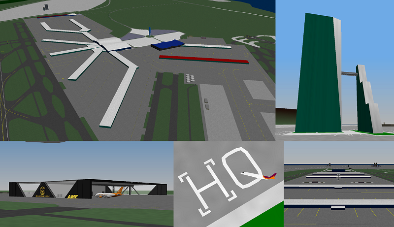

Maps*
Click the asterisk for more information!
Central Mediterranean Islands Extended - ABEL JETS EDITION
The latest version of the CMI-E map | Major updates to both MXA and LNB, and some new additions to the cities of Mandiola and Linbury

This latest version of the Central Mediterranean Islands - Extended map has been created exclusively for Abel Jets' massive fleet expansion and update, which was completed in December, 2020. To accomodate the new fleets of the many divisions of the now Abel Jets Virtual Group (AJVG), Terminal 2 at MXA was completely re-built from the ground up, with 155 gates. A separate, exclusive terminal, the Platinum Terminal, was also added to MXA's portfolio, and adds 6 more gates accomodating upto Code-F aircraft for a total of 201 gates for exclusive use by AJVG carriers. Combined, both terminals now form what is dubbed the "Abel Jets Superhub".
Terminal 1 was also completely re-built with a larger footprint and more gates.
Linbury City International Airport (LNB) also received a large expansion. Dubbed the "LNB Big Build", this massive expansion removed the existing landside terminals and concourses located north of runway 07-25, and resulted in a build-out of the current masterplan. Two new large, landside terminals, one for departures, the other for arrivals, and 5 new concourses form the major part of the "Big Build", while a new Abel Maintenance Facility (AMF) and expanded cargo parking wraps up the airside facilities. A second, south parallel runway was added, and so LNB now has two 11,000 X 200 ft. runways that will allow for a greater number of flights and destinations.
The new CMI Aviation Museum tops off the list of features at the expanded LNB.
Last but not least, a new World Headquarters was built for AJVG, and a new super-sized floating city, the "Symphony of CMI" was added. This super-ship boasts several levels, its own top-deck runway and parking for several small aircraft, as well as a multitude of amenities for guests.
Download CMI-E Abel Jets Edition
Atlantica V2.0 | Major Updates to all airports and City of Cashville | Released 1 August, 2018
Central Mediterranean Islands Extended (CMI Extended) - An expansion of Central Mediterranean Islands - released 25 June, 2016
A "hybrid" scenery | Three fictional islands - Turbot, Winnsworth and Ocaso Islands | Two real-world islands - Malta and Pantelleria, courteousy of user Neocon at YSFHQ
The Central Mediterranean Islands (fictional) map is where I really began to get a better sense of map-making. I started experimenting more with ground objects, colours, the tools in the Scenery Editor and other elements to create some unique elevation grid buildings (like the 1,800 ft tall CMI Center in Mandiola and the "Sails at Linbury"). I also added a third fictional island named "Ocaso" which is Spanish for "sunset", and used more of the new techniques I had acquired in sprucing up Turbot and Winnsworth Islands. I also researched quite a bit on airport markings, placement of the Instrument Landing System (ILS) box in relation to the Precision Approach Path Indicator (PAPI) lights, and more.
Soon after releasing CMI, Neocon approached me about incorporating two of his own real-world islands he had made into the CMI map - Malta and Pantelleria. I was quite honoured to do that as he is well-known for his own work, and he also gave me permission to modify those islands as necessary. I got to work on these islands, and with their inclusion, CMI Extended became the latest addition in the long line of modifications to the original Turbot Island map. I hope you enjoy flying around CMI and CMI-E as much as I have enjoyed making them.
You can download either CMI or CMI-E, but since the latter contains all of CMI plus the new additions, Malta and Pantelleria, I have decided most people will prefer downloading the extended version. Either way, both versions are available below for your convenience.
Turbofan's Civilian and Commercial Map Pack (TF_CivCoMP)
Maps made prior to 2016 packaged up and ready to go!
- Atlantica - first map I made - released in 2012; other versions include Atlantica F.A.S.T. (Framerate Accelerated for Smoother Transition) and Atlantica DUSK (simulated late-evening)
- Cul-de-Sac P.A.C. - the first-ever private fly-in community for YS Flight - also released in 2012
- Turbot Island (stand-alone), Winnsworth Island (stand-alone) and Turbot Island with Winnsworth Island. Turbot Island L.I.T.E. (Less Intensive To Execute) is a lighter version of Turbot Island
Aircraft Repaints
Turbofan's Super King Air Repaint Pack (TF-SKARP)
A collection of 25 repaints of the Super King Air 200. No much to say here
except hope you like them! Made possible by the inclusion of a .dnm (dynamic
model) file by its original creator, Taskforce58 of YSFHQ. It is a
colouring base file which you can edit, using the "find-and-replace" feature of
any text editor to repaint all 13 different areas on the aircraft (otherwise
my repainting skills are basically non-existent).
Download TF-SKARP
Turbofan's Super King Air Repaint Pack 2 (TF-SKARP 2)
TF-SKARP 2 contains 10 repaints. All of these were colour
combinations that popped into my head, or ones I saw in real-life. Again, credit to
member Taskforce58 for the aircraft and the coloringbase.dnm file, which made
these repaints possible.
Download TF-SKARP2
*Unless otherwise noted, most of my map work is entirely fictional, with inspiration drawn from real-world locations. Any resemblances to real-world locations or names are purely coincidental.